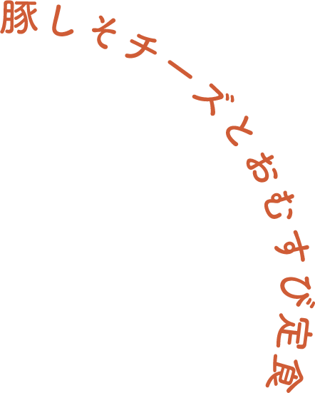
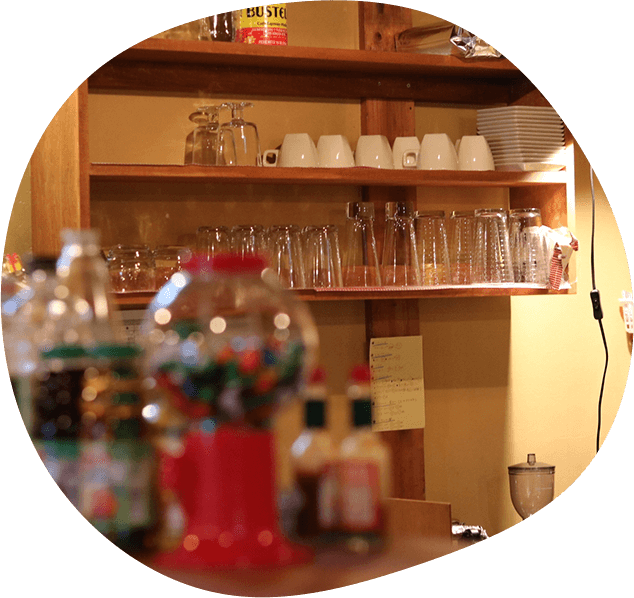

どんなに忙しくても、生きていることを実感して欲しいから。
わたし達は「食事」から、皆さんの幸せの時間をサポートします。
メニュー
やまだ食堂自慢の定食です。
おにぎりの具はその日のお楽しみ。
手軽に美味しさと健康が楽しめるよう、
PFCバランスも明記しています。
-
 
当店のこだわり
-
産地の掲載
1
やまだ食堂でお出しするお料理の材料は全て、契約農家から直接仕入れています。 皆さんの体の一部となる大切なお料理なので、材料の品質には妥協しません。 調味料も、店主が「これだ！」と決めたものを日本全国から取り寄せて使用しています。 もちろん、無添加＆化学調味料不使用です。
-
栄養素の可視化
2
やまだ食堂では、全てのメニューの栄養素を記載しています。
1日の健康的なお食事に大切な、たんぱく質・脂質・炭水化物の「PFCバランス」を意識して食事をすると、ダイエットの効果も期待できます。
美味しいお料理を食べながら、自分の身体と向き合ってみませんか？ -

どこか懐かしい空間
3
やまだ食堂は、築50年の古民家を買い取り、リノベーションして生まれた食堂です。
新しい風を感じながらもどこか懐かしさの香る空間で、ぜひお食事をお楽しみください。店内ではゆったりとしたBGMが常に流れ、他の座席に座る人たちのおしゃべりを聞きながら素敵な時間を過ごすことができます。
アクセス
東京都世田谷区
おむすび町３丁目２番地
東京地下鉄線おむすび駅南口より徒歩５分
Google Mapで見る